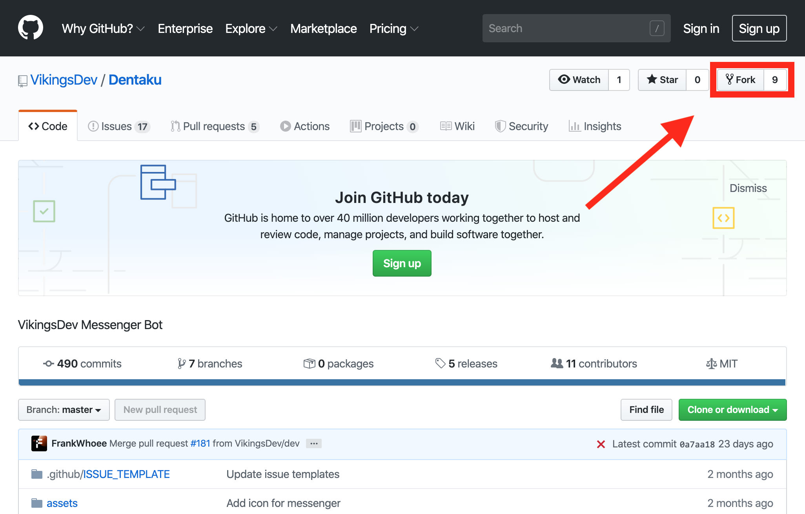
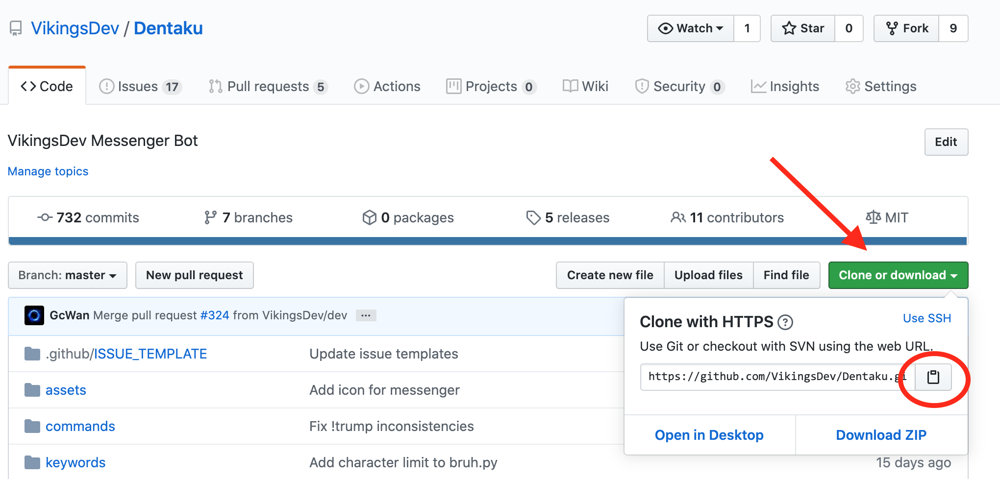
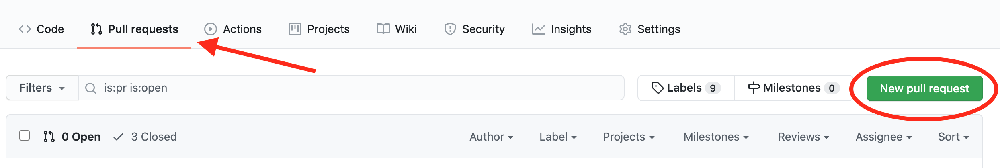
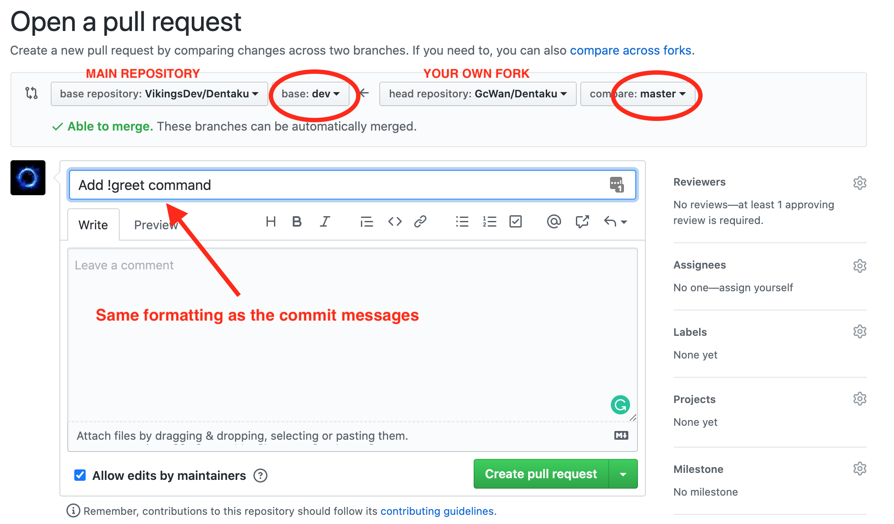

In this workshop, I will be showing you how to make commands on the VikingsDev messenger bot.
You need a GitHub account to complete this workshop.
If you do not have a GitHub account yet, please click the button below to sign up.
You need a Python IDE to complete this workshop.
If you do not have a Python IDE, you can try downloading Atom. Alternatively, you may also use any other IDE that you may prefer if it supports Python. Make sure that you know the basic functions of the IDE of your choice.
Setting up the environment
First, login to GitHub and go to the VikingsDev Dentaku repository. Fork the VikingsDev bot by clicking the "Fork" button on the top right.
You should now be inside your own fork. To make sure, check the title of the repository. It should be YOUR_USERNAME / Dentaku and say "forked from VikingsDev/Dentaku" in the subtitle. We will need to clone this repository so click the green "Clone or download" button on the right and click the clipboard to the right of the URL to copy it.
Find the Terminal application (it should be in your applications folder) and open it. A command line should pop up in a new window. Type 'git clone' followed by the URL you have copied and then press enter:
git clone https://github.com/YOUR_USERNAME/Dentaku.gitThis should have created a folder named "Dentaku" in your user folder. To access it, type:
cd DentakuThe command line should now say: Dentaku USERNAME$. For the next step, we will need to use pip. To check if you have pip installed, type 'pip' and then press enter. Sometimes, you may have to type 'pip3'. If both of these commands return 'command not found', you will need to install pip. Click the button below and follow the instructions to install pip.
Now, we need to set up a virtual environment. Type the following code. If you had to type 'pip3' instead of 'pip' in the last step, you will need to type 'python3' instead of 'python' for the remainder of this workshop.
python -m venv venv
If the command did not work, you may have to type pip install virtualenv first. To check if you have
successfully created a virtual environment, you can type ls and look for a 'venv' folder.
Next, we will need to create an export file. Type touch export.sh to create the file and then open
the file using a text editor of your choice. The file should be located in your Dentaku folder. You will need to
fill in the following information:
export EMAIL="YOUR_FACEBOOK_ACCOUNT_EMAIL"
export PASSWORD="YOUR_FACEBOOK_ACCOUNT_PASSWORD"
export BITLY_GAT="YOUR_BITLY_GENERIC_ACCESS_TOKEN"
export G_CREDENTIALS="PATH_TO_YOUR_SERVICE_ACCOUNT_JSON"
Note: You only need to export BITLY_GAT variable if you wish to use commands with link shorteners. Similarly, G_CREDENTIALS are only required if you want to use Google Cloud integration. Make sure you remember to save the file!
We will now have to enter the virtual environment we made earlier. Once inside the virtual environment, those that have been using 'pip3' can now use 'pip' instead.
source venv/bin/activate
pip install -r requirements.txt
The first line of code activates the virtual environment. A (venv) should appear at the beginning of your command line to signal that you are now in the virtual environment. The second line will install all the packages you will need from a list in the file 'requirements.txt'. In the future, you will need to add any new modules that your command needs to 'requirements.txt'. You will need to have your Python IDE open for the next steps, but don't close Terminal yet. We will need it again later.
Creating a command
Now we can start making out first command! Open the Dentaku folder as a project in your IDE. For most IDEs, the open option will be in the file tab. Locate the commands folder inside Dentaku. There should already be many pre-made commands inside. This folder will be where we add our own commands.
Create a new file in the commands folder. (This can usually be done by right-clicking the commands folder in your IDE.) Name the file greet.py. This file will run when the user sends !greet on messenger. At the beginning of every file, you will need to add the following code. Try adding it to greet.py right now!
from command import Command
from fbchat import Message
from fbchat import Mention
As your commands get more complicated, you may have to import other modules as well. For now, this will do. Now, we can move onto the actual command itself. We now have to create a class and a run method to code our command in. Both your class and file should have the same name, otherwise the command will not trigger properly. Your code should now look like this:
from command import Command
from fbchat import Message
from fbchat import Mention
class greet(command):
def run(self):
The code inside the method will be the code that is run when the command is called. Make two variables, response_text and mentions. We will only concern ourselves with changing the response_text variable. It is the text that will be sent by the bot after the command is called. To be clear with who the bot is replying to, responses from the bot will always start with @user where 'user' is name of the person who triggered the command. Make the variables with the following code inside the run method:
def run(self):
mentions = [Mention(self.author_id, length=len(self.author.first_name) + 1)]
response_text = "@" + self.author.first_name + " Hello!"
This will cause Dentaku to say 'Hello!' to whoever triggered the command. (ex. @Steve Hello!) We still need to add the code to send the message. Add the following at the end of all of your run methods.
self.client.send(
Message(text=response_text, mentions=mentions),
thread_id=self.thread_id,
thread_type=self.thread_type
)
There's one last thing we need to do. To help others understand how to use a command, we can create a method named define_documentation. For our command, there are no parameters and the command says hello. This information will be shown automatically if someone uses the !help command.
def define_documentation(self):
self.documentation = {
"parameters": "NONE",
"function": "Greets the user with a friendly hello."
}
Now our command is complete! The file should look exactly like the code below. Let's try running the bot so that we can test it out.
from command import Command
from fbchat import Message
from fbchat import Mention
class greet(command):
def run(self):
mentions = [Mention(self.author_id, length=len(self.author.first_name) + 1)]
response_text = "@" + self.author.first_name + " Hello!"
self.client.send(
Message(text=response_text, mentions=mentions),
thread_id=self.thread_id,
thread_type=self.thread_type
)
def define_documentation(self):
self.documentation = {
"parameters": "NONE",
"function": "Greets the user with a friendly hello."
}
Remember to save your changes to the file!
Running the bot
Open a terminal window and make sure that you are in the venv of Dentaku. Enter the following to run Dentaku.
python main.py
Once you see 'Listening...' in your terminal output, that means that the bot is successfully running. Try sending '!greet' to the account you have ran it on to see what happens. You can also try '!help !greet'.
You will notice that you cannot enter any commands into your Terminal window while Dentaku is running.
If you have made new changes after running Dentaku, you will need to stop the current process and restart it
to see the changes take effect. NEVER RUN MORE THAN ONE INSTANCE OF DENTAKU AT ONCE. Try to limit the
times you restart Dentaku, as Facebook may label frequent restarts as suspicious. To stop running Dentaku,
press CTRL-C. You may have to press it more than once to return to your command line.
Pushing the command
Once you are satisfied with your command, stop running Dentaku. In order to add your changes to GitHub, you need to commit and then push your changes. Enter the following commands in Terminal. You may have to enter your GitHub email and password if prompted. NOTE: The first line is only necessary when you create a new file. If you only changed existing files, you will not need to add the file to git.
git add greet.py
git commit -m "COMMIT_MESSAGE"
git push
Your commit message should be a description of what you have added. Make sure that it is in the imperative form, as if you are
giving instructions.
Ex: "Add greet command", NOT "I added !greet" or "Adds a greet command".
Make sure to keep your fork up to date! You will need to do this by running ./pull-fork.sh in Terminal. You should always update your fork before making changes to prevent merge conflicts.
After committing and pushing your changes, you will need to make a pull request to the 'dev' branch of the main VikingsDev repository. To do so, click the green 'New pull request' button in the "Pull requests" tab.
If you do not see an option to change the head and base repositories, click 'compare across forks'.

Make sure that the BASE repository is VikingsDev/Dentaku and the base branch is 'dev'. The HEAD repository should be your fork and the branch is 'master'.
Title your pull request in the same way you write your commit message and make sure it sums up what your pull request adds to Dentaku. When you are ready, click the green 'Create Pull Request' button and wait for approval.
Congratulations, you have now completed the workshop! To have your pull request approved, you will need to create your own command
(or improve an existing one). Please do NOT try to add greet.py to Dentaku, we do not need the command in our bot.
Make sure that you delete the file before you push your commits so that it does not get accidentally added to GitHub. You can type
git rm greet.py and then use git commit and git push if you need to remove it from GitHub.
This project is eligible for VikingsDev Bounties. Click the button below to learn more.